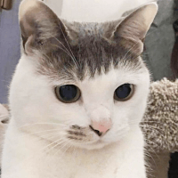

난 이세상에서 가장 맛있는 외식이 엽떡인데
쯔양이 너무 부러움.. 그렇게 먹는데도 안찌는데 최대의행복 아니냐
인간이 먹는거로 즐거움을 가장 느끼는데 말야
ㅇㅇ · 11.18 15:28:44
내가 딱 저랬음... 미필 때는 시발 과자 존나 좋아해서 과자만 쳐먹고 밥맛없어서 밥 안먹고 그랬는데, 군대가서 힘드니까 밥 존나 쳐먹고 짬 차서 px 막 다니니까 과자도 존나 사먹고 여름엔 하루에 아이스크림 두개 세개 이렇게 먹고 하니까 말년까지 22kg 쪄서 전역함. 전역하고도 식습관 개선이 안되는데다 운동량은 줄어서 지금은 더 쪘음
ㅇㅇ · 11.18 15:31:35
나 멸치인데 제로콜라만먹고 과자는 굳이먹어야싶다 결혼해서 밥챙겨주는거 처먹으니 조금은찜 지금도 과자는별로 제로콜라는 매일마심
아님말고 · 11.18 15:32:25
파오후 쿰척쿰척
씹덕후 하악하악
ㅇㅇ · 11.18 15:33:56
공감
ㅇㅇ · 11.18 15:35:02
본인 씹멸치인데 군것질도안함
ㅇㅇ · 11.18 15:36:52
이새기 멸치인적 없는 고도비만 돼지새긴가 멸치는 군것질조차 귀찮아서 안함 - dc App
↳ 답글 · ㅇㅇ · 11.18 15:38:11
케바케야. 난 멸치인데 군것질 많이 하고 끼니는 잘 안 챙겨 먹어서 글쓴이 설명 동의하는데
옛날에 일본에서 오래 살다 온 친구 있었음. 90년대 후반에 반포에 있는 걔네집에서 놀다가 걔가 그러더라
한국과자 존나 맛없음. 근데 바나나우유는 존나 최고임 내 일본친구들도 오면 다 극찬한다고 함
그리고 특히 담배필때 같이 마시면 기가막히다고 했음
ㅇㅇ · 11.18 16:23:52
남자 키 175에 65키로인데... 배만 불룩 --> 탄수화물 좀 끊어 ET 새끼들아
ㅇㅇ · 11.18 16:25:50
난 멸치들 일상이 존나 신기하면서 궁금함 얘낸 진짜 다른 종인가 싶음
ㅇㅇ · 11.18 16:26:02
멸치들은 하루에 두끼먹음 배고프다 스위치가 잘 안켜져서 밥거르고 겜딸잠 갈길다가 술한번 빨고 한두끼 스킵함
↳ 답글 · ㅇㅇ · 11.18 16:32:40
시발 종족변경하고싶노
↳ 답글 · ㅇㅇ · 11.18 17:24:57
ㄹㅇ 그 스위치가 있음 ㅋㅋ
ㅇㅇ · 11.18 16:26:25
편의점에서 파는 프레첼 초록색 존나 맛잇음 ㅋㅋ
ㅇㅇ · 11.18 16:29:11
d - dc App
ㅇㅇ · 11.18 16:29:27
근데 같은 조건에서 멸치 vs 돼지 누가 오래 삼? 나 오래오래 살아서 나오는 애니 게임 소설 영화 하나라도 더 챙겨봐야하는디 ㅜ 일단은 돼지긴해...... 살뺄까
↳ 답글 · ㅇㅇ · 11.18 16:45:34
동양인은 돼지면 오래 못산다
↳ 답글 · ㅇㅇ · 11.18 18:25:20
같은 조건이면 돼지가 더 오래 삼
더 행복하게 산다는 소린 아님
돼지들을 살려내는 의학이 아직은 더 뛰어남
ㅇㅇ · 11.18 16:31:17
멸치들은 보통 걍 장 흡수력이 구린거임 입맛에 맞는건 잘먹는다 다만 살로 가는 경우가 거의 없지
ㅇㅇ · 11.18 16:33:29
과자로 식사하는 멸치 다 내장비만 아님? - dc App
ㅇㅇ · 11.18 16:33:58
딴건 몰라도 젤리는 왜먹나 모르겠삼
ㅇㅇ · 11.18 16:39:50
본인 멸치일때 심심하면 24시간씩 굶었는데
ㅇㅇ · 11.18 16:46:29
저런거 먹고 ㅉㄴ살은 존나 보기싫게찜
ㅇㅇ · 11.18 16:48:58
빙하기 때문에 생겨난 유전자
ㅇㅇ · 11.18 17:01:57
자칭 멸치 특 : 20대 중반 넘어서면 거미체형 마른 비만됨 하루 3끼 다 처먹고 간식까지 먹는데 멸치인 사람은 거의 없음
ㅇㅇ · 11.18 17:15:32
맞음 내가 콜라 하루에 1리터 마시고 과자 먹는데 밥을 한끼만 먹음
ㅇㅇ · 11.18 17:18:42
안찌는 멸치는 저런 군것질로 찌워도 배만 나옴
ㅇㅇ · 11.18 17:22:55
유전자 영향도 있겠지만 대게는 그냥 인풋 아웃풋 따라 가더라 평생을 172 54 로 살았는데 군대에서 60까지 쪄봄 근데 자대 가고 제대쯤 되니까 다시 56으로 내려오더라 가장 큰 영향이 식습관임 성향이나 이런 것까지 다 유전자다 이러면 할 말 없는데 일단 과자 같은 거 먹어서 포만감 생기면 대게 그 다음 끼니는 거르거나 적게 먹음 그렇다고 소식하는 건 아니고 먹을 때는 많이 먹기도 함 고기도 보통은 2, 3인분 먹어야 하고 치킨 피자 이런 것도 가장 큰 거 혼자 먹어야 됨 다만 이렇게 먹으면 다음 끼는 적게 먹거나 거르게 됨 그냥 생각이 없어지거든 중간에 간식 같은 거 먹고 싶은 마음도 전혀 없고 이런 거에서 차이 나는 것 같더라 살 찌는 사람들은 많이 먹고도 다음 끼니를 또 그만큼 먹음
↳ 답글 · ㅇㅇ · 11.18 17:26:05
뭔가 인지하는 것부터 차이가 나는 것 같기도 함 과자 음료를 충분히 먹었다 싶으면 나한테 이게 끼니라면 살 찌는 사람들한테는 끼니가 아니더라 그거 먹고 또 밥을 먹음 이런 것부터 이미 차이가 큼 졸립고 배고프면 배고픔 해소를 위한 의지가 귀찮아서 잠을 선택하는데 살찌는 사람들은 먹고 자더는 경우가 많기도 했고 그냥 살 안 찐 입장에서는 먹는 게 귀찮을 때가 꽤 됨 귀찮아서 안 먹음 배고픔에 대한 강박? 선호도? 이런 게 살 찌는 유형에 비해 후순위로 박혀 있는 기분이라고 해야 하나? 배고픔의 충동이 강하지 않은 기분? 어쨌든 그 뭔가 미묘한 차이가 있는데 그걸로 살이 찌는지 안 찌는 많이 갈리는 것 같음
↳ 답글 · ㅇㅇ · 11.18 17:26:26
또 그걸 이성이나 의지로 운동 등을 병기해서 관리하면 적당히 유지 되는 거고 그게 안 되고 평소대로 살면 마르거나 찌게 되는 거고 그런 것 같음
ㅇㅇ · 11.18 17:23:35
ㅇㄱㄹㅇ 나 멸친데 간식먹으면 식사 건너뜀 ㅋ
샨테 · 11.18 17:29:10
ㅋ · 11.18 17:30:16
멸치 돼지 상관없이 간헐적단식 추천함... 18:6~20:4 정도로 맞추면됨 ㅇㅇ 16:8방식은 별로야
ㅇㅇ · 11.18 17:31:39
돼지들 특 하루 4끼 다처먹고 과자배 따로있어서 과자까지 처먹는데 프링글스한통 과자한봉지 이상 그냥 뜯으면 일단 다쳐먹어야함 남기는꼴을못봄
근데 꼴에 살덜찌겟다고 제로콜라 쳐먹음ㅋㅋㅋㅋㅋ 개웃김ㅋㅋㅋㅋㅋㅋㅋㅋㅋㅋ
ㅇㅇ · 11.18 17:34:20
적어도 글쓴사람 멸치 아니네. 멸치가 뭔 군것질을 못끊어. 걍 한끼 든든하게 먹으면 하루 버틸수도 있는것 뿐인데
ㅇㅇ · 11.18 17:35:06
뚱땡이 새끼들 특징이 많이 쳐먹고 또 쳐마시고 달거나 짠거 쳐먹고 먹자마자 쳐눕고 거의 안움직임
내가 느낀건 멸치들은 적게먹어서보단
교감신경이 항진돼 있는경우가 많음 생각이 너무 많고 외부자극에 예민하게 반응하고 그래서 장기가 제 기능을 발휘하려면 진정, 안정상태여야되는데 하루중 긴장, 각성상태가 더 길어서 그런거임
↳ 답글 · ㅇㅇ · 11.18 15:08:46
오래 못살겟노 나도 좀 그런느낌인데
↳ 답글 · ㅇㅇ · 11.18 15:16:24
@ㅇㅇ(119.105) 나 믿고 유산소 해봐 주 3회 20-30분
나도 뭣모를때 유산소는 살빼는 사람들이 해야하는것, 멸치들이 하면 살만 더 빠지는 운동이라고 아주 얕게 생각했었는데 전혀아니었어 멸치는 유산소가 필수야 근력운동도 병행하면 더 좋고
↳ 답글 · ㅇㅇ · 11.18 15:24:58
다 그런건 아니지만 그런부류도 있긴함
↳ 답글 · ㅇㅇ · 11.18 15:59:28
비만약이란게 대부분 사람을 억지로 그런 상태로 만드는 약들임. 그래서 다이어트약에서 마약 성분 검출 같은 뉴스가 쉴새 없이 나왔음
↳ 답글 · ㅇㅇ · 11.18 16:39:01
ㄹㅇ인가? 유산소가 도움된다고?
↳ 답글 · ㅇㅇ · 11.18 16:43:27
@ㅇㅇ 신경계 안정에 유산소만큼 도움되는게 없음
자율신경계만 안정돼도 모든 장기의 기능과 효율이 좋아짐 그때 몸이 영양을 흡수할 준비가 됨
이런 기반이 마련돼야 근육도 잘붙고 회복도 좋아짐
유산소는 얻는게 더 많다 수준이 아니라 얻는것밖에 없음
마라톤 뛰는거 아니면 근손실, 살빠짐 걱정할필요 없음
↳ 답글 · ㅇㅇ · 11.18 17:07:08
@ㅇㅇ 나는 주에 대여섯번 근력운동하고 유산소도 두세번은 하는데 지금도 평균 이하 체중이고 잡생각, 불안 많고 예민함 .. 신경계가 안정되려면 시간이 많이 걸림?
@ㅇㅇ(223.39) 무조건 바뀐다고 생각하고 꾸준히해봐, 우리같은 체질은 습관도 습관이지만 타고난 체질탓도 있어서 질병 완치개념이 아니라 관리개념으로 접근해야 스트레스 안받아
그래서 완전 안정상태를 목표로 관리하고
그 상태로 6개월이상 유지해야 그게 새로운 향상성으로 정착돼서 체질이 바뀐다고 생각함
너가 행동하고있으니 무조건 바뀔수밖에 없어
댓글
수집 당시 댓글 259개
ㅇㅇ · 11.18 15:26:12
ㅇㅇ · 11.18 15:26:28
ㅇㅇ · 11.18 15:26:33
ㅇㅇ · 11.18 15:27:32
ㅇㅇ · 11.18 15:28:44
ㅇㅇ · 11.18 15:31:35
아님말고 · 11.18 15:32:25
ㅇㅇ · 11.18 15:33:56
ㅇㅇ · 11.18 15:35:02
ㅇㅇ · 11.18 15:36:52
· ㅇㅇ · 11.18 15:38:11
· ㅇㅇ · 11.18 19:14:57
ㅇㅇ · 11.18 15:37:29
맛간람쥐 · 11.18 15:38:41
· ㅇㅇ · 11.18 15:40:17
· ㅇㅇ · 11.18 15:48:17
· ㅇㅇ · 11.18 17:09:38
알카 · 11.18 15:39:36
ㅇㅇ · 11.18 15:41:51
ㅇㅇ · 11.18 15:43:08
· ㅇㅇ · 11.18 15:45:32
ㅇㅇ · 11.18 15:45:16
ㅇㅇ · 11.18 15:51:47
ㅇㅇ · 11.18 15:59:13
ㅇㅇ · 11.18 16:01:25
· ㅇㅇ · 11.18 16:01:39
ㅇㅇ · 11.18 16:02:02
· ㅇㅇ · 11.18 16:03:00
ㅇㅇ · 11.18 16:04:23
갓겜이 · 11.18 16:10:03
ㅇㅇ · 11.18 16:13:07
ㅇㅇ · 11.18 16:13:41
ㅇㅇ · 11.18 16:15:31
ㅇㅇ · 11.18 16:16:55
ㅇㅇ · 11.18 16:17:33
ㅇㅇ · 11.18 16:20:20
· ㅇㅇ · 11.18 16:32:14
· ㅇㅇ · 11.18 17:00:03
ㅇㅇ · 11.18 16:20:42
· ㅇㅇ · 11.18 16:22:06
ㅇㅇ · 11.18 16:21:18
ㅇㅇ · 11.18 16:22:41
ㅇㅇ · 11.18 16:22:47
ㅇㅇ · 11.18 16:23:52
ㅇㅇ · 11.18 16:25:50
ㅇㅇ · 11.18 16:26:02
· ㅇㅇ · 11.18 16:32:40
· ㅇㅇ · 11.18 17:24:57
ㅇㅇ · 11.18 16:26:25
ㅇㅇ · 11.18 16:29:11
ㅇㅇ · 11.18 16:29:27
· ㅇㅇ · 11.18 16:45:34
· ㅇㅇ · 11.18 18:25:20
ㅇㅇ · 11.18 16:31:17
ㅇㅇ · 11.18 16:33:29
ㅇㅇ · 11.18 16:33:58
ㅇㅇ · 11.18 16:39:50
ㅇㅇ · 11.18 16:46:29
ㅇㅇ · 11.18 16:48:58
ㅇㅇ · 11.18 17:01:57
ㅇㅇ · 11.18 17:15:32
ㅇㅇ · 11.18 17:18:42
ㅇㅇ · 11.18 17:22:55
· ㅇㅇ · 11.18 17:26:05
· ㅇㅇ · 11.18 17:26:26
ㅇㅇ · 11.18 17:23:35
샨테 · 11.18 17:29:10
ㅋ · 11.18 17:30:16
ㅇㅇ · 11.18 17:31:39
ㅇㅇ · 11.18 17:34:20
ㅇㅇ · 11.18 17:35:06
ㅇㅇ · 11.18 17:40:30
MC발년 · 11.18 17:44:48
· ansav454 · 11.18 17:55:17
· MC발년 · 11.18 17:55:27
ㅇㅇ · 11.18 17:46:00
ㅇㅇ · 11.18 17:46:54
ㅇㅇ · 11.18 17:50:44
ㅇㅇ · 11.18 17:58:55
· ㅇㅇ · 11.18 19:17:35
ㅇㅇ · 11.18 18:00:32
· ㅇㅇ · 11.18 18:06:53
ㅇㅇ · 11.18 18:07:27
ㅇㅇ · 11.18 18:09:11
ㅇㅇ · 11.18 18:19:03
ㅇㅇ · 11.18 18:19:56
Hololive만본다 · 11.18 18:25:05
ㅇㅇ · 11.18 18:26:00
· ㅇㅇ · 11.18 18:27:26
ㅇㅇ · 11.18 18:26:07
ㅇㅇ · 11.18 18:37:25
37살월220 · 11.18 18:41:07
ㅇㅇ · 11.18 18:49:13
ㅇㅇ · 11.18 18:52:42
ㅇㅇ · 11.18 18:54:26
단샤리 · 11.18 19:04:37
ㅇㅇ · 11.18 19:19:57
ㅇㅅㅇ · 11.18 19:29:32
ㅇㅇ · 11.18 19:39:59
오뎅제왕 · 11.18 19:42:47
· ㅇㅇ · 11.18 14:55:31
· ㅇㅇ · 11.18 14:56:23
· ㅇㅇ · 11.18 15:25:13
파붕이 · 11.18 14:55:03
ㅇㅇ · 11.18 14:55:24
· ㅇㅇ · 11.18 15:28:17
제변소 · 11.18 14:55:40
· 유리시호 · 11.18 14:56:43
ㅇㅇ · 11.18 14:55:41
ㅇㅇ · 11.18 14:56:24
원또 · 11.18 14:56:27
· 제변소 · 11.18 14:57:15
ㅇㅇ · 11.18 14:56:27
· ㅇㅇ · 11.18 15:54:31
ㅇㅇ · 11.18 14:56:30
ㅇㅇ · 11.18 14:56:52
ㅇㅇ · 11.18 14:56:54
ㅇㅇ · 11.18 14:57:01
ㅇㅇ · 11.18 14:57:10
ㅇㅇ · 11.18 14:57:17
그정도..
인가?
ㅇㅇ · 11.18 14:57:30
ㅇㅇ · 11.18 14:57:47
· ㅇㅇ · 11.18 14:58:53
ㅇㅇ · 11.18 14:57:48
살모내란균 · 11.18 14:57:55
ㅇㅇ · 11.18 14:58:10
· ㅇㅇ · 11.18 15:15:27
우주 · 11.18 14:58:13
· ㅇㅇ · 11.18 15:00:31
노은지 · 11.18 14:59:10
ㅇㅇ · 11.18 14:59:41
· ㅇㅇ · 11.18 15:06:13
· ㅇㅇ · 11.18 15:06:25
깡고 · 11.18 15:02:43
ㅇㅇ · 11.18 15:03:47
· ㅇㅇ · 11.18 15:40:06
· ㅇㅇ · 11.18 17:02:53
ㅇㅇ · 11.18 15:04:11
· ㅇㅇ · 11.18 15:04:56
ㅇㅇ · 11.18 15:04:28
· ㅇㅇ · 11.18 15:04:36
· ㅇㅇ · 11.18 15:04:44
· ㅇㅇ · 11.18 15:25:55
삭제됨 · 11.18 15:04:36
· ㅇㅇ · 11.18 15:05:06
ㅇㅇ · 11.18 15:05:04
ㅇㅇ · 11.18 15:05:53
ㅇㅇ · 11.18 15:05:57
· ㅇㅇ · 11.18 15:08:46
· ㅇㅇ · 11.18 15:16:24
· ㅇㅇ · 11.18 15:24:58
· ㅇㅇ · 11.18 15:59:28
· ㅇㅇ · 11.18 16:39:01
· ㅇㅇ · 11.18 16:43:27
· ㅇㅇ · 11.18 17:07:08
· ㅇㅇ · 11.18 17:07:32
· ㅇㅇ · 11.18 17:15:47
· ㅇㅇ · 11.18 17:33:38
· ㅇㅇ · 11.18 17:40:17
· ㅇㅇ · 11.18 17:52:48
· ㅇㅇ · 11.18 17:54:38
ㅇㅇ · 11.18 15:08:13
· ㅇㅇ · 11.18 15:33:41
· ㅇㅇ · 11.18 15:40:28
ㅇㅇ · 11.18 15:08:20
DC전사쿠루미쨩 · 11.18 15:08:23
viper3 · 11.18 15:09:45
자전25 · 11.18 15:10:13
· 아리에타 · 11.18 17:40:12
ㅇㅇ · 11.18 15:10:17
ㅇㅇ · 11.18 15:11:22
· ㅇㅇ · 11.18 15:21:49
ㅇㅇ · 11.18 15:11:43
· ㅇㅇ · 11.18 15:40:26
· ㅇㅇ · 11.18 15:54:25
· ㅇㅇ · 11.18 16:16:15
· ㅇㅇ · 11.18 17:01:11
ㅇㅇ · 11.18 15:11:57
미겔앙헬 · 11.18 15:13:26
비오는거리 · 11.18 15:14:35
ㅇㅇ · 11.18 15:14:39
oo · 11.18 15:18:24
ㅇㅇ · 11.18 15:18:49
· ㅇㅇ · 11.18 15:20:12
· ㅇㅇ · 11.18 17:32:21
· ㅇㅇ · 11.18 18:04:32
· 한남킹반인이요 · 11.18 18:12:57
· ㅇㅇ · 11.18 18:32:14
ㅇㅇ · 11.18 15:19:24
ㅇㅇ · 11.18 15:19:54
· ㅇㅇ · 11.18 15:19:59
ㅇㅇ · 11.18 15:23:06
· ㅇㅇ · 11.18 15:32:52
· ㅇㅇ · 11.18 17:38:45
· ㅇㅇ · 11.18 18:12:00
· ㅇㅇ · 11.18 18:15:37
· ㅇㅇ · 11.18 18:16:22
ㅇㅇ · 11.18 15:23:24
2456778 · 11.18 15:24:10
ㅇㅇ · 11.18 15:24:57
ㅇㅇ · 11.18 13:24:19
ㅇㅇ · 11.18 13:24:42
ㅇㅇ · 11.18 13:24:46

ㅇㅇ · 11.18 13:25:41
· ㅇㅇ · 11.18 13:31:11
· ㅇㅇ · 11.18 13:32:47
· ㅇㅇ · 11.18 13:36:10
· 프븨 · 11.18 14:54:01
· ㅇㅇ · 11.18 14:54:40
싱글벙글지구촌마이너갤러리용아이디 · 11.18 13:25:52
· ㅇㅇ · 11.18 14:52:59
· ㅇㅇ · 11.18 15:04:08
Caracalism · 11.18 13:25:56
ㅇㅇ · 11.18 13:26:37
수류탄이야 · 11.18 13:29:04
눙눙 · 11.18 13:29:38
ㅇㅇ · 11.18 13:30:26
ㅇㅇ · 11.18 13:33:12
· 황병승 · 11.18 14:52:58
· ㅇㅇ · 11.18 15:05:49
· ㅇㅇ · 11.18 15:09:12
· 준비아님말고 · 11.18 15:17:05
· Razvedupr · 11.18 15:39:03
ㅇㅇ · 11.18 13:34:26
· ㅇㅇ · 11.18 13:49:08
· ㅇㅇ · 11.18 14:29:12
· ㅇㅇ · 11.18 14:52:54
· ㅇㅇ · 11.18 14:59:10
· ㅇㅇ · 11.18 15:01:10
· 시엘 · 11.18 15:03:50
· ㅇㅇ · 11.18 15:08:52
· ㅇㅇ · 11.18 15:24:25
· ㅇㅇ · 11.18 16:13:25
이미나 · 11.18 13:34:43
ㅇㅇ · 11.18 13:34:45
· ㅇㅇ · 11.18 13:49:50
· ㅇㅇ · 11.18 14:54:04
ㅇㅇ · 11.18 13:39:52
ㅇㅇ · 11.18 13:41:09
ㅇㅇ · 11.18 13:43:57
Припять · 11.18 14:00:59
유리시호 · 11.18 14:04:59
· 제변소 · 11.18 14:56:11
· ㅇㅇ · 11.18 15:23:52
고로시아 · 11.18 14:32:31
· ㅇㅇ · 11.18 14:54:33
· ㅇㅇ · 11.18 15:38:11
ㅇㅇ · 11.18 14:37:59
ㅇㅇ · 11.18 14:52:01
· ㅇㅇ · 11.18 15:05:24
· ㅇㅇ · 11.18 15:19:33
ㅇㅇ · 11.18 14:52:18
ㅇㅇ · 11.18 14:52:19
Enter · 11.18 14:52:46
ㅇㅇ · 11.18 14:54:17
ㅇㅇ · 11.18 14:54:25
수급자가된짱구 · 11.18 14:54:43
ㅇㅇ · 11.18 14:54:54
· ㅇㅇ · 11.18 14:55:21